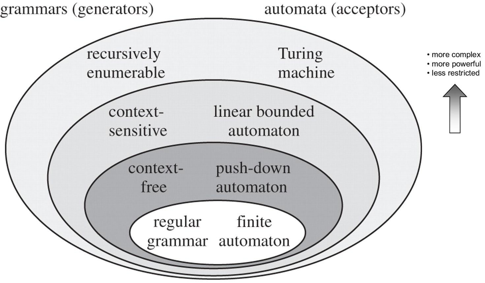
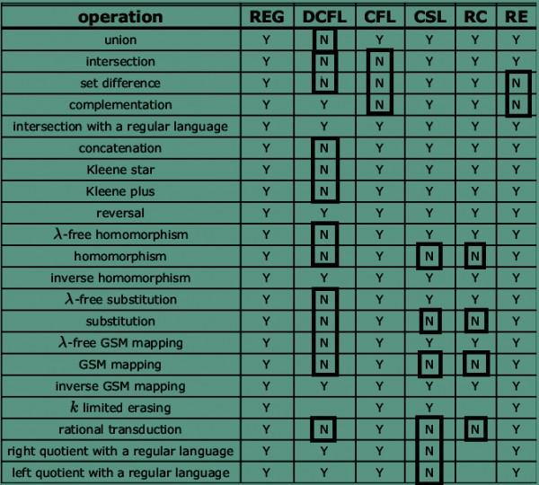
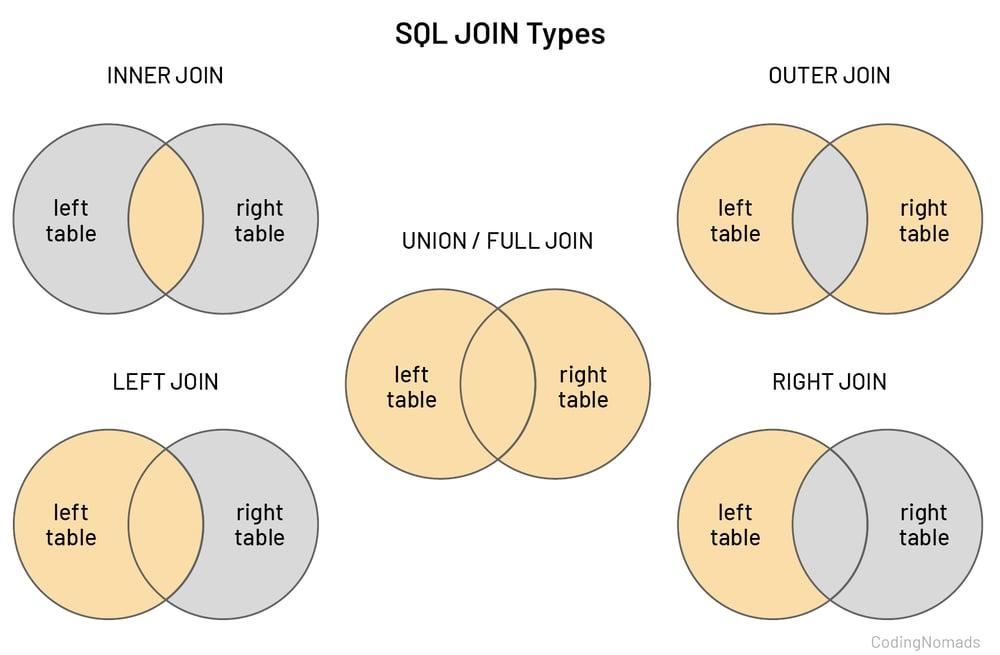
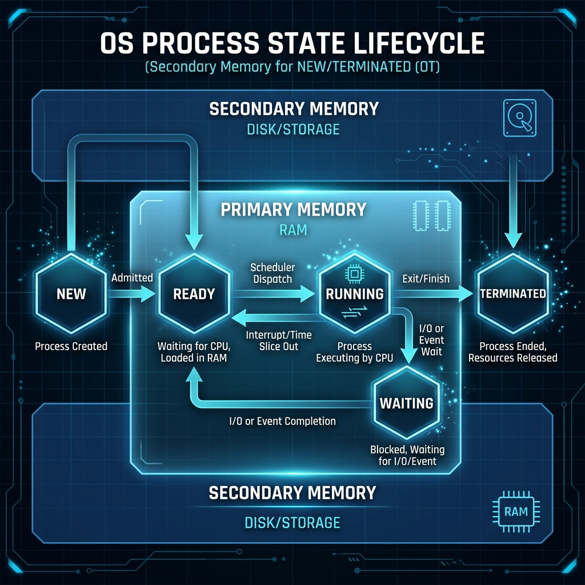
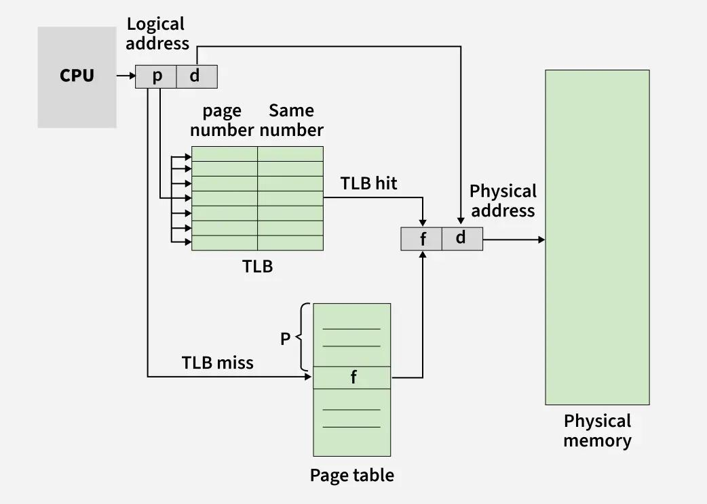
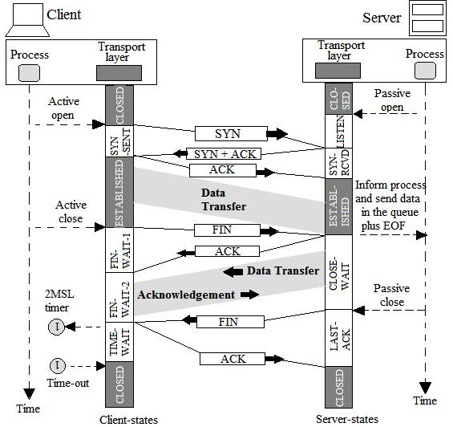

Paper 2 Technical Subject Notes
These notes are organized for HPCL officer post technical preparation: high-yield concepts, formulas, definitions, and subject-wise important points. Use the left navigation to move directly to the technical area you want to revise.
Theory of Computation
TOC is one of the highest-yield technical subjects for the HPCL officer posts examination. Focus on formal language hierarchy, grammar types, automata, pushdown automata, Turing machines, and decidability. Master the hierarchy and closure properties first because they unlock a large share of direct MCQs.


Regular Grammar Rules
Must be strictly Right-Linear or Left-Linear — never mixed.
Right-Linear: S → aS or S → a. A variable can only appear at the end
(right) or start (left), never in the middle.
NPDA Transition Function
δ (current_state, input_symbol, stack_top) → set of (next_state, stack_string). It takes 3 inputs: current state, current input symbol, and the current top of stack.
wwR vs wcwR
wwR (even palindrome, no center marker) = CFL only — DPDA cannot find the
midpoint.
wcwR (with center marker c) = DCFL — marker tells the DPDA to switch.
Closure Properties — Regular
- Union, Intersection, Complement ✓
- Concatenation, Kleene Star ✓
- Reversal, Homomorphism ✓
- All boolean operations closed ✓
Closure Properties — CFL
- Union, Concatenation, Kleene Star ✓
- Intersection with Regular ✓
- Intersection of two CFLs ✗
- Complement ✗
Decidable vs Undecidable
- Is w ∈ L? (Regular/CFL) — Decidable
- Is CFL empty? — Decidable
- Halting Problem — Undecidable
- Are two CFGs equivalent? — Undecidable
RE, NFA, DFA Are Equivalent
Regular Expressions, NFA, ε-NFA, and DFA have the same expressive power. They all define exactly the set of Regular Languages.
NFA to DFA
Subset construction may produce up to 2n DFA states from an NFA with n states. This upper-bound fact is a standard theory MCQ.
Minimal DFA
Equivalent states are merged during minimization. The minimized DFA is unique up to renaming and has the smallest number of states for the language.
Database Management Systems
DBMS questions in the HPCL officer paper usually revolve around ER diagrams, keys, integrity constraints, normalization, SQL, transactions, and relational algebra. Prioritize notation, constraints, and normal forms because they are fast marks when revised cleanly.
| Symbol / Notation | Represents | When Used |
|---|---|---|
| Rectangle | Entity Set | Any strong entity (has its own primary key) |
| Double Rectangle | Weak Entity | Entity that depends on another for existence (no own PK) |
| Diamond | Relationship Set | Connection between two entity sets |
| Double Diamond | Identifying Relationship | Links a weak entity to its owner entity |
| Ellipse (Oval) | Attribute | Property of an entity or relationship |
| Double Ellipse | Multi-valued Attribute | Attribute with multiple values (e.g., phone numbers) |
| Dashed Ellipse | Derived Attribute | Computed from another attribute (e.g., Age from DOB) |
| Underlined Attribute | Primary Key | Uniquely identifies entity in a strong entity set |
| Dashed Underline | Partial Key | Identifies weak entity (combined with owner's PK) |
Entity Integrity
The Primary Key of a table can never be NULL. Every row must be uniquely identifiable. This is enforced at the table level.
Referential Integrity
A Foreign Key value must either match an existing Primary Key in the referenced table, or be NULL. No dangling references allowed.
Domain Constraint
Each attribute value must be within the defined domain of that attribute. For example, an Age column should only store positive integers.
Transaction Properties
- Atomicity — All or nothing
- Consistency — DB stays valid
- Isolation — Transactions independent
- Durability — Committed = permanent
SQL Clause Hierarchy
Mandatory: SELECT, FROM
Optional: WHERE, GROUP BY, HAVING,
ORDER BY
Execution order: FROM → WHERE → GROUP BY → HAVING → SELECT → ORDER BY
Types of Joins
- INNER JOIN — matching rows only
- LEFT JOIN — all from left + matches
- RIGHT JOIN — all from right + matches
- FULL JOIN — all rows, nulls for no match
| Normal Form | Requirement | Violation Example |
|---|---|---|
| 1NF | No multi-valued / composite attributes; atomic values only | Phone = {9876, 1234} in one cell |
| 2NF | 1NF + No partial dependency (non-key attribute depends on part of composite PK) | Student_Name depends only on Student_ID, not (Student_ID, Course_ID) |
| 3NF | 2NF + No transitive dependency (non-key → non-key) | Zip → City where Zip is not a key |
| BCNF | For every FD X → Y, X must be a superkey | Stricter than 3NF; some 3NF tables violate BCNF |

Primary, Candidate, Super, Foreign
Super Key: any attribute set that uniquely identifies a tuple.
Candidate
Key: minimal super key.
Primary Key: selected candidate
key.
Foreign Key: references a key in another relation.
Functional Dependency
X → Y means tuples equal on X must be equal on Y. Normalization questions usually revolve around whether the determinant is a key, part of a key, or a non-key attribute.
Schedule Anomalies
Remember lost update, dirty read, and unrepeatable read. Serializable schedules preserve correctness of concurrent execution.
SELECT * FROM employees; is a complete, valid query. WHERE, GROUP BY, HAVING, and
ORDER BY are all optional clauses used for filtering, grouping, and sorting.Operating Systems
Operating Systems for the HPCL officer exam centers on process management, memory management, scheduling, file systems, deadlocks, and synchronization. This section is often direct and scoring if you memorize state transitions, scheduler roles, and timing formulas.

| Scheduler | Alias | Moves From | Moves To | Frequency |
|---|---|---|---|---|
| Long-Term Scheduler | Job Scheduler | New (Secondary) | Ready (RAM) | Slow (controls degree of multiprogramming) |
| Short-Term Scheduler | CPU Scheduler | Ready (RAM) | Running (CPU) | Very Fast (runs every few milliseconds) |
| Mid-Term Scheduler | Swapper | Waiting/Running | Suspended/Ready | Medium (reduces multiprogramming when needed) |
Paging — Address Translation
Logical address = Page Number + Offset
If logical space = 2n bytes
and page size = 2m bytes:
• Offset bits = m
• Page number bits = n - m
System Calls
When a user program needs OS kernel services, it uses a System Call via an Application Program Interface (API). Examples: read(), write(), fork(), exec().
File Allocation Table (FAT)
Maintains one entry per disk block, indexed by block number. Used in FAT12, FAT16, FAT32 file systems. Each entry points to the next block or indicates end-of-file.
Deadlock Conditions (All 4 Required)
- Mutual Exclusion
- Hold and Wait
- No Preemption
- Circular Wait
CPU Scheduling Algorithms
- FCFS — First Come First Served (non-preemptive)
- SJF — Shortest Job First
- SRTF — Shortest Remaining Time First
- Round Robin — time quantum based
- Priority — highest priority runs first
Critical Section Problem
Three requirements: Mutual Exclusion (only one process at a time), Progress (if no one in CS, a waiting process should enter), Bounded Waiting (no starvation).
→ Offset bits = 9, Page number bits = 12 - 9 = 3 bits
Paging vs Segmentation
Paging removes external fragmentation but may cause internal fragmentation. Segmentation can suffer from external fragmentation because segment sizes are variable.
Binary vs Counting Semaphore
Binary semaphore behaves like a lock with values 0/1. Counting semaphore manages multiple instances of a resource using an integer value.
Page Replacement Policies
FIFO, LRU, and Optimal are the most important policies. FIFO can show Belady's anomaly; Optimal gives the theoretical minimum page faults.

Computer Organization & Architecture
COA tests CPU organization, memory hierarchy, addressing modes, instruction formats, pipelining, number systems, and digital circuits. For the officer-post exam, keep the focus on comparisons, conversions, and simple machine-level calculations.
| Level | Type | Location | Speed | Cost/Size |
|---|---|---|---|---|
| 1 | Registers | Inside CPU | Fastest | Tiny (bytes), Expensive |
| 2 | Cache (L1/L2/L3) | Between CPU & RAM | Very Fast | KB–MB, Expensive |
| 3 | Main Memory (RAM) | On Motherboard | Fast | GB, Moderate |
| 4 | Secondary Storage | Hard Disk / SSD | Slow | TB, Cheap |
| 5 | Tertiary Storage | Tape / Optical | Slowest | Very Large, Cheapest |
Immediate Addressing
Operand value is directly embedded in the instruction itself. No memory access needed. Fastest.
Example: MOV R1, #5 (load value 5 into R1).
Register Addressing
Instruction contains the name/address of a register. The actual operand is stored inside the register. Very fast — no memory access.
Direct (Absolute) Addressing
The instruction contains the memory address of the operand. One memory access
required. Example: LOAD 2000 fetches data from address 2000.
Indirect Addressing
Instruction has an address that points to another address which holds the operand. Two memory accesses needed. Useful for pointers.
Indexed Addressing
Effective Address = Base Address + Index Register. Used for accessing arrays. The index register holds the displacement.
Pipeline Throughput
Once the pipeline is fully filled, one instruction completes per clock cycle. Pipelining improves throughput, not individual instruction latency. Hazards: Structural, Data, Control.
E.g., 1011(2) = 1×8 + 0×4 + 1×2 + 1×1 = 11
Output bits needed = k + 1 bits
E.g., 3-bit + 3-bit: max = 7+7 = 14 → needs 4 bits
Fetch → Decode → Execute
The CPU fetches an instruction, decodes the opcode, and then executes the operation. Questions often ask the correct order or the role of the Program Counter and Instruction Register.
1's and 2's Complement
1's complement flips all bits. 2's complement is 1's complement plus 1, and it is the standard representation used in signed binary arithmetic.
RISC vs CISC
RISC favors simple instructions and many registers. CISC supports more complex instructions and addressing modes. This comparison is a frequent direct concept question.
Algorithms & Data Structures
Algorithms questions usually test graph traversals, tree properties, sorting, greedy vs dynamic programming, and Big-O complexity analysis. In HPCL officer exams, identification questions are common, so learn which paradigm fits which problem.
| Algorithm | Paradigm | Key Data Structure | Complexity |
|---|---|---|---|
| Kruskal's MST | Greedy | Disjoint Set (Union-Find) | O(E log E) |
| Prim's MST | Greedy | Priority Queue / Min-Heap | O(E log V) |
| Dijkstra's Shortest Path | Greedy | Priority Queue / Min-Heap | O((V+E) log V) |
| Fractional Knapsack | Greedy | Sort by value/weight ratio | O(n log n) |
| 0/1 Knapsack | Dynamic Programming | 2D DP Table | O(nW) |
| Matrix Chain Multiplication | Dynamic Programming | 2D DP Table | Θ(n³) |
| Longest Common Subsequence | Dynamic Programming | 2D DP Table | O(mn) |
| BFS Traversal | Graph Traversal | Queue (FIFO) | O(V+E) |
| DFS Traversal | Graph Traversal | Stack (LIFO) | O(V+E) |
| Binary Search | Divide & Conquer | Sorted Array | O(log n) |
| Merge Sort | Divide & Conquer | Temporary Arrays | O(n log n) |
Compare a with b^k:
Case 1: a > b^k → T(n) = Θ(nlogba)
Case 2: a = b^k
If p > -1 → T(n) = Θ(nk logp+1 n)
If p = -1 → T(n) = Θ(nk log log n)
Case 3: a < b^k
If p ≥ 0 → T(n) = Θ(nk logp n)
In-Order Traversal
In-Order (Left → Root → Right) of a Binary Search Tree always produces nodes in non-decreasing (sorted ascending) order. This is the most tested BST property.
Pre-Order & Post-Order
Pre-Order (Root → Left → Right): Used to copy a
tree.
Post-Order (Left → Right → Root): Used to delete/evaluate expression
trees.
BFS vs DFS
BFS — Uses Queue. Explores level by level. Finds shortest path in
unweighted graphs.
DFS — Uses Stack (or recursion). Explores
depth-first. Used for cycle detection, topological sort.
Key Distinction
Greedy: Makes locally optimal choice at each step, never reconsiders. Works for
Fractional Knapsack.
DP: Solves overlapping subproblems optimally. Required
for 0/1 Knapsack.
Sorting Complexity
- Bubble/Selection/Insertion — O(n²)
- Merge Sort / Heap Sort — O(n log n)
- Quick Sort — O(n log n) avg, O(n²) worst
- Counting/Radix Sort — O(n+k)
Minimum Spanning Tree
MST has exactly V-1 edges for V vertices. Kruskal's builds by adding minimum weight edges without cycles. Prim's grows from a starting vertex by adding cheapest adjacent edge.
Binary Search Requirement
Binary Search requires a sorted array or search space. Its time complexity is O(log n) because each step halves the remaining search interval.
Collision Resolution
Important techniques are chaining, linear probing, quadratic probing, and double hashing. Primary clustering is strongly associated with linear probing.
O, Ω, Θ
O gives an upper bound, Ω gives a lower bound, and Θ gives a tight bound. These notations are regularly tested in one-line theory questions.
Computer Networks
Computer Networks covers the OSI model, IP addressing, subnetting, routing, TCP/UDP, and common port numbers. In the HPCL officer paper, this subject rewards clean recall of layers, addressing rules, protocol behavior, and port mapping.
Mnemonic (top→down): All People Seem To Need Data Processing
0.0.0.0 – 127.x.x.x
First bit: 0. Default mask /8. 126 networks, ~16 million hosts each. 127.x.x.x reserved for loopback.
128.x.x.x – 191.x.x.x
First bits: 10. Default mask /16. 16,384 networks, ~65,534 hosts each.
192.x.x.x – 223.x.x.x
First bits: 110. Default mask /24. ~2M networks, 254 usable hosts each.
Classless Inter-Domain Routing
Uses /n prefix notation. Host bits = 32 − n. Usable hosts = 2(32−n) − 2 (subtract network & broadcast).

RIP — Routing Information Protocol
Uses Bellman-Ford algorithm. Shares full routing table with neighbors. Prone to count-to-infinity problem. Max hop count = 15.
OSPF — Open Shortest Path First
Uses Dijkstra's algorithm. Each router holds a full topology map. Faster convergence, more scalable. Sends link-state advertisements (LSAs).
BGP — Border Gateway Protocol
Used for inter-AS (internet-level) routing. Shares full path to avoid loops. Policy-based, highly scalable but slow convergence.
RIP vs OSPF
| Feature | RIP | OSPF |
|---|---|---|
| Algorithm | Bellman-Ford | Dijkstra |
| Metric | Hop count | Cost (bandwidth) |
| Convergence | Slow | Fast |
| Max hops | 15 | Unlimited |
Hub
Works at the Physical Layer. It broadcasts incoming bits to all ports and does not filter traffic intelligently.
Switch / Bridge
Works at the Data Link Layer using MAC addresses. Each switch port creates a separate collision domain, improving LAN performance.
Router
Works at the Network Layer using IP addresses. Routers separate broadcast domains and forward packets between networks.
| Protocol | Port | Transport | Layer | Purpose |
|---|---|---|---|---|
| HTTP | 80 | TCP | Application | Web browsing (unencrypted) |
| HTTPS | 443 | TCP | Application | Secure web browsing (TLS) |
| FTP | 20/21 | TCP | Application | File transfer (data/control) |
| SMTP | 25 | TCP | Application | Sending email |
| POP3 | 110 | TCP | Application | Receiving email (download & delete) |
| IMAP | 143 | TCP | Application | Receiving email (sync, server-side) |
| DNS | 53 | TCP/UDP | Application | Domain name resolution |
| DHCP | 67/68 | UDP | Application | Dynamic IP address assignment |
| Telnet | 23 | TCP | Application | Remote login (unencrypted) |
| SSH | 22 | TCP | Application | Secure remote login |
| SNMP | 161 | UDP | Application | Network device management |
Software Engineering
Software Engineering is usually lighter in weightage, but it remains a useful scoring area for the HPCL officer exam if revised smartly. Focus on process models, testing, cohesion/coupling, maintenance, SRS, and COCOMO-style comparison questions.
Waterfall Model
Sequential flow: Requirements → Design → Implementation → Testing → Deployment →
Maintenance.
Key Idea: No phase overlap.
Advantages: Simple, easy to manage.
Limitations: No flexibility, late error detection.
Exam Insight: Not suitable when requirements are changing.
Agile Model
Iterative & incremental development with continuous feedback.
Key Idea: Deliver working software in small cycles (sprints).
Advantages: Flexible, customer-centric.
Limitation: Hard to predict cost/time precisely.
Exam Insight: Best when requirements evolve.
Spiral Model
Combines iterative development with risk analysis.
Each loop = Planning → Risk Analysis → Engineering → Evaluation.
Radius represents cost, angle represents progress.
Exam Insight: Used in high-risk projects.
Levels of Testing
Unit Testing: Smallest module, White-box testing.
Integration Testing: Checks interaction between modules.
System Testing: Entire system, Black-box testing.
Acceptance Testing: User validation (Alpha: internal, Beta: external).
White-box vs Black-box
White-box: Internal logic, code coverage, path testing.
Black-box: Input-output behavior, no code knowledge.
Exam Trap: Unit = White-box, System = Black-box (usually asked).
Cohesion (Within Module)
Degree to which elements inside a module belong together.
Types (Worst → Best): Coincidental → Logical → Temporal → Procedural → Communicational →
Sequential → Functional.
Goal: HIGH cohesion.
Coupling (Between Modules)
Degree of interdependence between modules.
Types (Worst → Best): Content → Common → Control → Stamp → Data.
Goal: LOW coupling.
Design Rule
Best design = High Cohesion + Low Coupling
Why?
- Easier maintenance
- Better scalability
- Less bug propagation
Types of Maintenance
Corrective: Fix defects.
Adaptive: Adapt to environment changes.
Perfective: Add/improve features (MOST effort).
Preventive: Improve maintainability.
Properties of Good SRS
- Correct
- Complete
- Consistent
- Unambiguous
- Verifiable
Role: Acts as a contract between client and developer.
COCOMO Model
Effort = a × (KLOC)b
Types:
- Organic (small projects)
- Semi-detached
- Embedded (complex systems)
Used for effort, time, and cost estimation.
Verification vs Validation
Verification: Are we building the product right?
Validation: Are we building the right product?
Verification is process-oriented; validation is user-need oriented.
Error, Fault, Failure
Error: human mistake.
Fault: defect in software.
Failure: incorrect external behavior during execution.
Software Reliability
Reliability is the probability that software performs without failure for a specified time under stated conditions. It is different from correctness and maintainability.
This combination ensures modular, maintainable, and scalable systems.
Programming & Data Structures
Programming & Data Structures is a high-return area because many HPCL officer questions are direct output, memory, OOP, pointers, and code-trace questions. Strong fundamentals here can convert this section into some of the quickest marks in Paper 2.
Encapsulation
Binding data + methods together.
Achieved using private, protected, public.
Goal: Data hiding.
Abstraction
Hiding internal complexity, showing only essentials.
Achieved using abstract classes / interfaces.
Example: Driving a car without knowing engine details.
Inheritance
One class acquires properties of another.
Promotes code reuse.
Types: Single, Multiple, Multilevel, Hierarchical.
Polymorphism
One interface, multiple implementations.
Compile-time: Function overloading
Run-time: Function overriding
Java Keywords
this → current object
super → parent class
static → class-level (shared memory)
final → constant / no override
Static Variables
Initialized only once.
Stored in static memory area.
Retains value across function calls.
Exam Trap: Not reinitialized each call.
Stack Memory
Stores function calls + local variables.
Fast allocation.
Automatically managed.
Exam Insight: Function recursion uses stack frames.
Heap Memory
Dynamic memory allocation (malloc, new).
Slower but flexible.
Requires manual deallocation.
Exam Trap: Memory leaks if not freed.
Pointer Basics
Stores address of a variable.
*ptr → value at address
&x → address of x
Pointer Arithmetic
ptr + 1 → moves by size of data type.
Example: int pointer → +4 bytes.
Exam Trap: Not always +1 byte.
Arrays & Pointers
Array name acts as pointer to first element.
arr[i] = *(arr + i)
Important: Arrays ≠ pointers (but closely related).
Pass by Value
Copy of variable is passed.
Changes do NOT affect original variable.
Pass by Reference
Address is passed.
Changes reflect in original variable.
C: via pointers
C++: reference variables
Static Variable Behavior
Value persists across function calls.
Initialized only once.
Loop + Condition Traps
Off-by-one errors (i < n vs i <= n).
Infinite loops due to missing updates.
Pointer + Function
Modifying via pointer changes original value.
Common in swap problems.
Stack vs Queue
Stack: LIFO, used in recursion and function calls.
Queue: FIFO, used in scheduling and BFS.
Push/Pop belong to stack, Enqueue/Dequeue belong to queue.
Linked List Basics
Each node stores data + link.
Dynamic size, non-contiguous memory allocation.
Insertion/deletion is easy after locating a node, but random access is slow.
Tree and Graph Facts
A tree with n nodes has n-1 edges.
Binary tree node degree is at most 2.
Queue and stack concepts frequently connect with traversal questions.
void func() {
static int x = 0;
printf("%d ", x);
x++;
}
int main() {
func(); func(); func();
}
Execution:
First call → x = 0
Second call → x = 1
Third call → x = 2
Static variable retains value across calls.
One interface → multiple implementations.